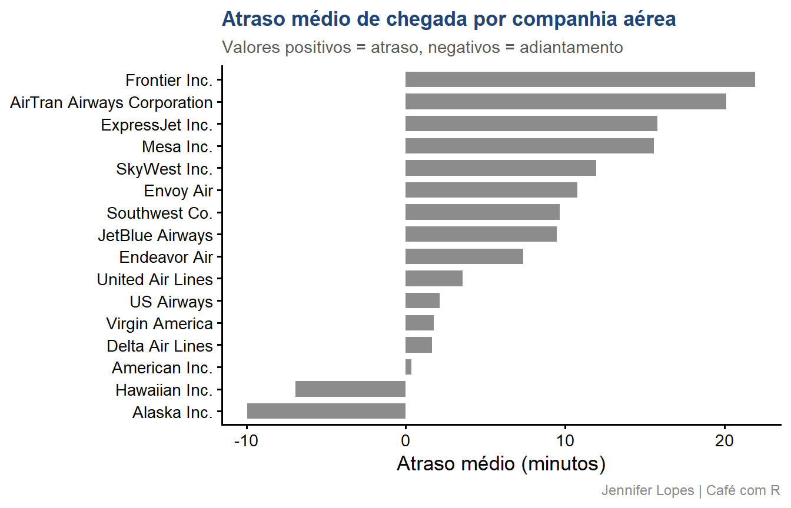

Code
install.packages(c("DBI", "dbplyr", "RSQLite",
"RPostgres", "nycflights13", "pool"))DBI, dbplyr e SQLite do zero ao mercado
Esta aula foi construída para que você entenda como conectar o R a bancos de dados relacionais, consultar dados sem carregá-los na memória e gerar SQL automaticamente a partir do código dplyr que você já conhece.

SITE OFICIAL> https://jenniferlopes.github.io/meu_site/
Aula 5. Do SQL para o R com dbplyr - Link
Aula 5.1. SQL x R (dbplyr) - cheat sheet com as funções - Link
Aula 14. R e RStudio | 14 integrações que você precisa conhecer - Link
install.packages(c("DBI", "dbplyr", "RSQLite",
"RPostgres", "nycflights13", "pool"))library(DBI)
library(dbplyr)
library(RSQLite)
library(tidyverse)
library(nycflights13)Um banco de dados relacional é um sistema de armazenamento organizado em tabelas, estruturas com linhas e colunas, onde cada linha é um registro e cada coluna é um atributo.
O que torna esse banco relacional é a capacidade de relacionar tabelas entre si por meio de chaves. Uma tabela de voos se relaciona com uma tabela de aeroportos pela coluna origin.
Uma tabela de pedidos se relaciona com uma tabela de clientes pela coluna id_cliente.
Esse modelo foi proposto por Edgar F. Codd em 1970 e é a base de praticamente todos os bancos de dados empresariais até hoje.

| Situação | CSV/Parquet | Banco relacional |
|---|---|---|
| Dados compartilhados entre múltiplos usuários | Conflitos de escrita | Controle de concorrência nativo |
| Atualizações frequentes em registros específicos | Reescrever o arquivo inteiro | UPDATE em uma linha |
| Integridade entre tabelas | Manual e frágil | Chaves estrangeiras e constraints |
| Consultas ad hoc por analistas | Requer R ou Python | SQL direto no banco |
| Auditoria e histórico de mudanças | Ausente | Transações e logs |
Dois perfis distintos de banco de dados, com propósitos opostos:
OLTP, Online Transaction Processing: otimizado para escrever e atualizar registros individuais com rapidez e segurança. Usado em sistemas operacionais: e-commerce, ERP, sistemas de saúde, aplicações web.
OLAP, Online Analytical Processing: otimizado para ler e agregar grandes volumes de dados. Usado em análise de dados, BI e data warehouse.
O R se conecta aos dois tipos com a mesma interface DBI. A diferença está no uso: você usa OLTP para buscar dados operacionais e OLAP para análise de grandes volumes.
SQL (Structured Query Language) é a linguagem padrão para comunicação com bancos de dados relacionais. Foi padronizada pela ISO e é compreendida por praticamente todos os bancos relacionais.
As operações mais comuns:
-- Selecionar dados
SELECT origin, dest, arr_delay
FROM flights
WHERE month = 6 AND arr_delay > 0
-- Agregar
SELECT origin, AVG(arr_delay) AS atraso_medio
FROM flights
GROUP BY origin
-- Juntar tabelas
SELECT f.flight, a.name AS companhia
FROM flights f
LEFT JOIN airlines a ON f.carrier = a.carrierdbplyr traduz código dplyr para SQL automaticamente. Você não precisa escrever SQL, mas entender SQL ajuda a depurar o que o dbplyr gera.DBI (DataBase Interface) é o pacote R que define uma interface unificada para comunicação com qualquer banco de dados relacional.
dbConnect(), dbDisconnect(), dbReadTable(), dbWriteTable() e dbExecute(), mas não implementa a comunicação com nenhum banco específico.| Banco | Driver R |
|---|---|
| SQLite | RSQLite |
| PostgreSQL | RPostgres |
| MySQL / MariaDB | RMySQL ou RMariaDB |
| SQL Server | odbc |
| BigQuery | bigrquery |
| DuckDB | duckdb |
dbplyr é um backend do dplyr que traduz operações dplyr para SQL e as executa diretamente no banco de dados.
O que isso significa na prática:
dplyr que usa para data.framesdbplyr traduz para SQL e envia ao bancocollect()Isso é fundamental para dados grandes: você pode agregar 100 milhões de linhas no banco e trazer para o R apenas uma tabela com 10 linhas de resultado.
SQLite é um banco de dados relacional embutido: não precisa de servidor, não requer configuração e armazena todo o banco em um único arquivo .sqlite no disco.
Características:
SQLite é perfeito para projetos locais, prototipagem e compartilhamento de dados estruturados em um único arquivo. Para ambientes de produção com múltiplos usuários, use PostgreSQL.
library(DBI)
library(RSQLite)
# Criar um banco SQLite em disco
# Se o arquivo não existir, ele é criado automaticamente
con <- dbConnect(
drv = SQLite(),
dbname = "dados_aula/voos.sqlite")
# Banco em memória, temporário, não persiste no disco
con_mem <- dbConnect(
drv = SQLite(),
dbname = ":memory:")
# Verificar a conexão
con<SQLiteConnection>
Path: :memory:
Extensions: TRUEO objeto de conexão é uma referência ao banco. Todas as operações subsequentes usam esse objeto para se comunicar com o banco. A conexão deve ser sempre encerrada com
dbDisconnect()ao final do trabalho.
# Escrever múltiplas tabelas do nycflights13 no banco
dbWriteTable(con, "flights", nycflights13::flights)
dbWriteTable(con, "airlines", nycflights13::airlines)
dbWriteTable(con, "airports", nycflights13::airports)
dbWriteTable(con, "planes", nycflights13::planes)
dbWriteTable(con, "weather", nycflights13::weather)
# Listar as tabelas disponíveis no banco
dbListTables(con)[1] "airlines" "airports" "flights" "planes" "weather" # Listar as colunas de uma tabela
dbListFields(con, "flights")
# Ler as primeiras linhas diretamente
dbReadTable(con, "airlines")# A tibble: 19 × 1
colunas
<chr>
1 year
2 month
3 day
4 dep_time
5 sched_dep_time
6 dep_delay
7 arr_time
8 sched_arr_time
9 arr_delay
10 carrier
11 flight
12 tailnum
13 origin
14 dest
15 air_time
16 distance
17 hour
18 minute
19 time_hour # A tibble: 16 × 2
carrier name
<chr> <chr>
1 9E Endeavor Air Inc.
2 AA American Airlines Inc.
3 AS Alaska Airlines Inc.
4 B6 JetBlue Airways
5 DL Delta Air Lines Inc.
6 EV ExpressJet Airlines Inc.
7 F9 Frontier Airlines Inc.
8 FL AirTran Airways Corporation
9 HA Hawaiian Airlines Inc.
10 MQ Envoy Air
11 OO SkyWest Airlines Inc.
12 UA United Air Lines Inc.
13 US US Airways Inc.
14 VX Virgin America
15 WN Southwest Airlines Co.
16 YV Mesa Airlines Inc. # dbGetQuery() executa SQL e retorna um data.frame
resultado_sql <- dbGetQuery(con, "
SELECT origin,
COUNT(*) AS total_voos,
AVG(arr_delay) AS atraso_medio,
AVG(dep_delay) AS atraso_partida
FROM flights
WHERE arr_delay IS NOT NULL
GROUP BY origin
ORDER BY atraso_medio DESC")
resultado_sql# A tibble: 3 × 4
origin total_voos atraso_medio atraso_partida
<chr> <int> <dbl> <dbl>
1 EWR 117127 9.11 15.0
2 LGA 101140 5.78 10.3
3 JFK 109079 5.55 12.0tbl() cria uma referência a uma tabela no banco sem carregar os dados. O resultado é um objeto tbl_SQLiteConnection, uma tabela lazy que vive no banco, não na memória do R.
# Criar referência à tabela flights no banco
flights_db <- tbl(con, "flights")
# Inspecionar o objeto sem carregar os dados
flights_db# A query: ?? x 19
# Database: sqlite 3.51.2 [:memory:]
year month day dep_time sched_dep_time dep_delay arr_time sched_arr_time
<int> <int> <int> <int> <int> <dbl> <int> <int>
1 2013 1 1 517 515 2 830 819
2 2013 1 1 533 529 4 850 830
3 2013 1 1 542 540 2 923 850
4 2013 1 1 544 545 -1 1004 1022
5 2013 1 1 554 600 -6 812 837
6 2013 1 1 554 558 -4 740 728
7 2013 1 1 555 600 -5 913 854
8 2013 1 1 557 600 -3 709 723
9 2013 1 1 557 600 -3 838 846
10 2013 1 1 558 600 -2 753 745
# ℹ more rows
# ℹ 11 more variables: arr_delay <dbl>, carrier <chr>, flight <int>,
# tailnum <chr>, origin <chr>, dest <chr>, air_time <dbl>, distance <dbl>,
# hour <dbl>, minute <dbl>, time_hour <dbl>?? nas dimensões indica que o número exato de linhas não foi contado: o dbplyr evita COUNT(*) desnecessários. Os dados ainda estão no banco.# Todo esse pipeline é executado no banco, não no R
consulta <- flights_db |>
filter(!is.na(arr_delay), month %in% c(6, 7, 8)) |>
group_by(origin, month) |>
summarise(
total_voos = n(),
atraso_medio = mean(arr_delay, na.rm = TRUE),
prop_atrasado = mean(arr_delay > 0, na.rm = TRUE),
.groups = "drop") |>
arrange(month, desc(atraso_medio))
# Nenhum dado foi carregado ainda
consulta# A query: ?? x 5
# Database: sqlite 3.51.2 [:memory:]
# Ordered by: month, desc(atraso_medio)
origin month total_voos atraso_medio prop_atrasado
<chr> <int> <int> <dbl> <dbl>
1 JFK 6 9182 17.6 0.474
2 EWR 6 9736 16.9 0.470
3 LGA 6 8157 14.8 0.437
4 JFK 7 9757 20.2 0.502
5 EWR 7 10126 15.5 0.458
6 LGA 7 8410 14.2 0.449
7 EWR 8 10144 6.71 0.403
8 JFK 8 9870 5.91 0.415
9 LGA 8 8742 5.41 0.394dbplyr mostra a fonte (flights) e as operações registradas. A consulta ainda não foi enviada ao banco.# show_query() exibe o SQL que o dbplyr vai enviar ao banco
flights_db |>
filter(!is.na(arr_delay), month %in% c(6, 7, 8)) |>
group_by(origin, month) |>
summarise(
total_voos = n(),
atraso_medio = mean(arr_delay, na.rm = TRUE),
prop_atrasado = mean(arr_delay > 0, na.rm = TRUE),
.groups = "drop") |>
arrange(month, desc(atraso_medio)) |>
show_query()<SQL>
SELECT
`origin`,
`month`,
COUNT(*) AS `total_voos`,
AVG(`arr_delay`) AS `atraso_medio`,
AVG(`arr_delay` > 0.0) AS `prop_atrasado`
FROM `flights`
WHERE (NOT((`arr_delay` IS NULL))) AND (`month` IN (6.0, 7.0, 8.0))
GROUP BY `origin`, `month`
ORDER BY `month`, `atraso_medio` DESCshow_query() é uma ferramenta de aprendizado e depuração. Use para entender o SQL gerado, verificar se está correto e aprender SQL a partir do dplyr que você já conhece.
# collect() executa a consulta e traz os dados para o R
resultado <- flights_db |>
filter(!is.na(arr_delay), month %in% c(6, 7, 8)) |>
group_by(origin, month) |>
summarise(
total_voos = n(),
atraso_medio = mean(arr_delay, na.rm = TRUE),
.groups = "drop") |>
arrange(month, desc(atraso_medio)) |>
collect()
resultado# A tibble: 9 × 4
origin month total_voos atraso_medio
<chr> <int> <int> <dbl>
1 JFK 6 9182 17.6
2 EWR 6 9736 16.9
3 LGA 6 8157 14.8
4 JFK 7 9757 20.2
5 EWR 7 10126 15.5
6 LGA 7 8410 14.2
7 EWR 8 10144 6.71
8 JFK 8 9870 5.91
9 LGA 8 8742 5.41airlines_db <- tbl(con, "airlines")
# left_join é traduzido para LEFT JOIN em SQL
flights_db |>
left_join(airlines_db, by = "carrier") |>
filter(!is.na(arr_delay)) |>
group_by(name) |>
summarise(
voos = n(),
atraso_medio = mean(arr_delay, na.rm = TRUE),
.groups = "drop") |>
arrange(desc(atraso_medio)) |>
collect()# A tibble: 16 × 3
name voos atraso_medio
<chr> <int> <dbl>
1 Frontier Airlines Inc. 681 21.9
2 AirTran Airways Corporation 3175 20.1
3 ExpressJet Airlines Inc. 51108 15.8
4 Mesa Airlines Inc. 544 15.6
5 SkyWest Airlines Inc. 29 11.9
6 Envoy Air 25037 10.8
7 Southwest Airlines Co. 12044 9.65
8 JetBlue Airways 54049 9.46
9 Endeavor Air Inc. 17294 7.38
10 United Air Lines Inc. 57782 3.56
11 US Airways Inc. 19831 2.13
12 Virgin America 5116 1.76
13 Delta Air Lines Inc. 47658 1.64
14 American Airlines Inc. 31947 0.364
15 Hawaiian Airlines Inc. 342 -6.92
16 Alaska Airlines Inc. 709 -9.93 flights_db |>
left_join(airlines_db, by = "carrier") |>
filter(!is.na(arr_delay)) |>
group_by(name) |>
summarise(
voos = n(),
atraso_medio = mean(arr_delay, na.rm = TRUE),
.groups = "drop") |>
collect() |>
mutate(name = str_remove(name, " Inc\\.| Co\\.| LLC| Airlines?")) |>
ggplot(aes(x = reorder(name, atraso_medio),
y = atraso_medio,
fill = atraso_medio > 0)) +
geom_col(width = 0.7, alpha = 0.9) +
coord_flip() +
scale_fill_manual(values = c(
"TRUE" = cores_cafe["marrom"],
"FALSE" = cores_cafe["azul_claro"])) +
labs(
title = "Atraso médio de chegada por companhia aérea",
subtitle = "Valores positivos = atraso, negativos = adiantamento",
x = NULL,
y = "Atraso médio (minutos)",
caption = "Jennifer Lopes | Café com R") +
tema +
theme(legend.position = "none")
# Criar uma tabela de resumo analítico no banco
resumo_mensal <- flights_db |>
filter(!is.na(arr_delay)) |>
group_by(month, origin) |>
summarise(
total_voos = n(),
atraso_medio = round(mean(arr_delay, na.rm = TRUE), 2),
.groups = "drop") |>
collect()
# Escrever o resumo de volta ao banco
dbWriteTable(
conn = con,
name = "resumo_mensal",
value = resumo_mensal,
overwrite = TRUE)
dbListTables(con)[1] "airlines" "airports" "flights" "planes"
[5] "resumo_mensal" "weather" # dbExecute() executa SQL que modifica dados: UPDATE, DELETE, INSERT
# Retorna o número de linhas afetadas
# Adicionar uma coluna calculada
dbExecute(con, "
ALTER TABLE resumo_mensal
ADD COLUMN categoria TEXT")
# Atualizar com base em condição
dbExecute(con, "
UPDATE resumo_mensal
SET categoria = CASE
WHEN atraso_medio > 15 THEN 'Alto'
WHEN atraso_medio > 0 THEN 'Moderado'
ELSE 'Baixo'
END")
# Verificar o resultado
dbGetQuery(con, "SELECT * FROM resumo_mensal LIMIT 6")[1] 0[1] 36# A tibble: 6 × 5
month origin total_voos atraso_medio categoria
<int> <chr> <int> <dbl> <chr>
1 1 EWR 9616 12.8 Moderado
2 1 JFK 9031 1.37 Moderado
3 1 LGA 7751 3.38 Moderado
4 2 EWR 8575 8.78 Moderado
5 2 JFK 8007 4.39 Moderado
6 2 LGA 7029 3.15 Moderado Uma transação é um conjunto de operações que deve ser executado de forma atômica: ou todas as operações são aplicadas, ou nenhuma é.
Isso garante que o banco nunca fique em um estado inconsistente se algo falhar no meio do processo.
dbBegin(con)
tryCatch({
dbExecute(con, "INSERT INTO resumo_mensal
VALUES (13, 'JFK', 0, 0, 'Baixo')")
dbExecute(con, "UPDATE resumo_mensal
SET total_voos = total_voos + 1
WHERE month = 13")
dbCommit(con)
}, error = function(e) {
dbRollback(con)
message("Transação desfeita: ", e$message)
})Use transações sempre que executar múltiplas operações de escrita que dependem umas das outras.
Exemplos que exigem transação:
Se a segunda operação falhar sem transação, o banco fica em estado inconsistente. Com transação, o dbRollback() desfaz tudo automaticamente.
PostgreSQL é um banco de dados relacional de código aberto, considerado o banco relacional mais avançado disponível livremente. É o padrão em ambientes corporativos e acadêmicos quando se precisa de:
Diferente do SQLite, o PostgreSQL roda como um servidor separado que precisa estar ativo para receber conexões.
library(RPostgres)
# NUNCA coloque senha diretamente no código
# Use variáveis de ambiente armazenadas no .Renviron
# No arquivo .Renviron (nunca versionar):
# PG_HOST=localhost
# PG_PORT=5432
# PG_DBNAME=meu_banco
# PG_USER=meu_usuario
# PG_PASSWORD=minha_senha
con_pg <- dbConnect(
drv = Postgres(),
host = Sys.getenv("PG_HOST"),
port = as.integer(Sys.getenv("PG_PORT")),
dbname = Sys.getenv("PG_DBNAME"),
user = Sys.getenv("PG_USER"),
password = Sys.getenv("PG_PASSWORD"))
con_pgNunca coloque senhas, tokens ou chaves de API diretamente no código R. Se o script for versionado no GitHub, as credenciais ficam expostas publicamente.
O arquivo .Renviron armazena variáveis de ambiente que o R carrega automaticamente ao iniciar. Ele deve estar no .gitignore.
# Criar ou abrir o .Renviron
usethis::edit_r_environ()
# Adicionar as credenciais
PG_HOST=localhost
PG_PASSWORD=minha_senha_segura
# Após salvar, reiniciar o R
# CTRL + SHIFT + F10A maior vantagem do DBI e do dbplyr é que o código dplyr é idêntico independente do banco:
# Com SQLite
tbl(con, "flights") |>
filter(month == 6) |>
group_by(origin) |>
summarise(n = n()) |>
collect()
# Com PostgreSQL: exatamente o mesmo código
tbl(con_pg, "flights") |>
filter(month == 6) |>
group_by(origin) |>
summarise(n = n()) |>
collect()Apenas a string de conexão muda. Todo o pipeline de análise permanece o mesmo.
# dbDisconnect() libera os recursos da conexão
dbDisconnect(con)
# Em scripts que podem falhar, use on.exit() para garantir
# que a conexão seja fechada mesmo em caso de erro
minha_funcao <- function() {
con <- dbConnect(SQLite(), "banco.sqlite")
on.exit(dbDisconnect(con), add = TRUE)
resultado <- tbl(con, "flights") |>
filter(month == 1) |>
collect()
resultado
}on.exit() garante que dbDisconnect() será chamado quando a função terminar, mesmo que ocorra um erro. É o equivalente ao finally de outras linguagens.
Em aplicações Shiny ou scripts que abrem e fecham conexões frequentemente, o pool gerencia um conjunto de conexões reutilizáveis:
library(pool)
pool_con <- dbPool(
drv = SQLite(),
dbname = "dados_aula/voos.sqlite",
minSize = 1,
maxSize = 5)
tbl(pool_con, "flights") |>
filter(month == 1) |>
count(origin) |>
collect()
poolClose(pool_con)Injeção de SQL ocorre quando um valor fornecido pelo usuário é inserido diretamente em uma query SQL, podendo alterar a lógica da consulta.
# INSEGURO: valor do usuário concatenado diretamente
origem_usuario <- "JFK"
dbGetQuery(con, paste0(
"SELECT * FROM flights WHERE origin = '", origem_usuario, "'"))
# SEGURO: usar parâmetros com ?
# O ? indica um parâmetro que será sanitizado automaticamente
dbGetQuery(
con,
"SELECT * FROM flights WHERE origin = ?",
params = list(origem_usuario))Algumas funções R não têm equivalente SQL e geram erro no modo lazy:
# Isso gera erro: median() não tem equivalente SQL padrão
tbl(con, "flights") |>
group_by(origin) |>
summarise(mediana = median(arr_delay)) |>
collect()
# Solução: collect() antes da operação não suportada
tbl(con, "flights") |>
filter(!is.na(arr_delay)) |>
collect() |>
group_by(origin) |>
summarise(mediana = median(arr_delay))Quando o dbplyr não consegue traduzir uma função, o erro indica no translation available. A solução quase sempre é collect() antes da operação não suportada.
| Função | O que faz |
|---|---|
dbConnect() |
Abre a conexão com o banco |
dbDisconnect() |
Fecha a conexão |
dbListTables() |
Lista tabelas disponíveis |
dbListFields() |
Lista colunas de uma tabela |
dbWriteTable() |
Escreve um data.frame no banco |
dbReadTable() |
Lê uma tabela inteira para o R |
dbGetQuery() |
Executa SQL e retorna data.frame |
dbExecute() |
Executa SQL de modificação (UPDATE, INSERT, DELETE) |
tbl() |
Cria referência lazy a uma tabela remota |
show_query() |
Exibe o SQL gerado pelo dbplyr |
collect() |
Executa a consulta e traz o resultado para o R |
| Situação | Abordagem |
|---|---|
| Análise exploratória em dados locais | CSV ou Parquet com arrow |
| Dados compartilhados entre analistas | Banco relacional (PostgreSQL) |
| Banco local sem servidor | SQLite |
| Consultas repetidas em dados grandes | Banco relacional com índices |
| Agregar antes de trazer para o R | tbl() com dplyr e collect() |
| Operações não suportadas pelo dbplyr | collect() com dplyr convencional |
| Situação | Causa | Solução |
|---|---|---|
no translation available |
Função R sem equivalente SQL | collect() antes da função |
table not found |
Nome da tabela incorreto | Verificar com dbListTables() |
unable to open database |
Caminho do arquivo SQLite errado | Verificar com file.exists() |
| Situação | Causa | Solução |
|---|---|---|
| Credenciais no código | Senha exposta no script | Usar .Renviron com Sys.getenv() |
| Conexão não fechada | dbDisconnect() esquecido |
Usar on.exit(dbDisconnect(con)) |
| Banco em estado inconsistente | Escrita sem transação falhou | Envolver operações em dbBegin() e dbCommit() |
DBI: dbi.r-dbi.orgdbplyr: dbplyr.tidyverse.orgRSQLite: rsqlite.r-dbi.orgRPostgres: rpostgres.r-dbi.orgpool: rstudio.github.io/pool
Continue praticando e explorando.
Esta aula é parte do projeto Café com R. É open source. Use, compartilhe e adapte.
Que cada gole desperte uma nova ideia.
Que cada script abra uma nova conversa.
Que o Café com R se torne um ponto de encontro nosso.
SITE OFICIAL> https://jenniferlopes.github.io/meu_site/